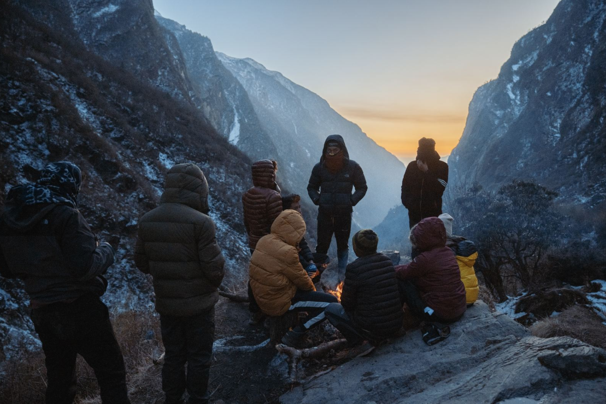

The English word "education" is made up of two latin root words -
ex - out
and
ducat-ducare - to pull.
‘To pull out what is within.’
Education means to pull out our hidden potential within. There is this hidden gem which can be seen and excavated by seeing the strength within.
It does not mean to fill up with clouds of information. History is replete with tired and old narratives. They are only 'true' because we give them that collective power.
Coaching is aligned with the true spirit of education - it means:
to support a person’s inner changes in such in a way that helps them get where they want to go.
Coaches do not create awareness, but they help in withdrawing our attention from the fearful perspective to the wise one. They steer the conversation deliberately toward the light, the goal, the liberated perspective. Such is the heart of allhealthy change. Coaching unlocks a person’s potential to maximise their performance. Traditionally, it has been associated with sports. An athlete is all about:
efficiency in motion
Learning how to breathe efficiently, how to eat well, how to listen to the body, how to train the mind. A great athlete has aligned the heart with a deep form of self-love and creativity. All top athletes have a coach and yet we find coaches in every area of life - in business, in career developments and in sports. We see a coach to help achieve our goals in life and work. Coaching is a partnership between coach and client. The coach helps the client to achieve their personal best and to go beyond their wildest dreams in the diverse arenas of their personal and professional lives.
To go beyond fear we have to be open to seeing with new eyes. Change happens when we question and become open to seeing with the fullness of our imaginative genius. This is our primary focus at sutranovum.
There was a little boy who wet the bed. His grandmother spent some time witnessing his behavior and she surmised that he was sharing his love but it wasn’t being received well. His love therefore was literally leaking out.
Once this insight dawned, thereafter everyone in the family said how grateful they were for him loving them whenever the little boy shared his love for those family members. They said “Ooh Thank You for your love - it feels so good. I so appreciate it.”
From that moment on the little boy never wet his bed again.
--- The word "business" comes from Middle English and it simply means "appointed tasks." Essentially business is about people: people working in businesses, people getting their needs met through products and services.
At sutranovum we are focused on the value of the human being. Maturity means learning the art of forgiveness. Maturity is also about prioritizing your own goals and accomplishing them rather than making the goals of someone else your raison d'être and living your life trying to fulfill others dreams. We believe such maturity is not mutually exclusive from authentic collaboration. That the two are actually aligned when emotional intelligence is fully awakened in us.
We believe that when companies build their logic around the value of the human being, their aspirations, needs and wants, while maintaining clear goals for the company, then that is a mature company. Semco in Brazil is one example of such a business. There are more and more coming to the fore.
If business means appointed tasks, then mature businesses must be focused on tasks and goals that are wise. But what does wisdom mean? The English word comes from a greek word which means: "prudent" or "self-controlled." Emerson wrote that prudence is the "the outmost action of the inward life." When we look at the history of the buildings that have dominated society there are three that stand out:
-the church or temple
-the state building
-the skyscraper
The word economy comes from a word which means: 'household management'
Managing a household requires understanding the ecosystem. On a farm, the ecosystem is the land, the crops, the weeds, the insects, the climate etc. Every subject in our programs page is an ecosystem. From the body to the planet, an ecosystem is involved. Managing oneself, managing a family, managing company - is an inside job, it requires intuition, sensors, feedback, monitoring, decisions etc.
Being prudent or self-controlled is looking at what we are projecting out -is it insecurity or faith in our resources and capabilities and each other...and the potentials therein?
"It’s an axiom of business that great companies grow their revenues and profits year after year. Yet quietly, under the radar, a small number of companies have rejected the pressure of endless growth to focus on more satisfying business goals."
Small Giants - Companies that want to be great not big - Bo Burlingame
Things like manifesting a great working atmosphere, providing awesome customer service, being focused in excellence in what they do, contributing wholeheartedly and smartly to their wider communities, facilitating inspired ways for their employees to manage their workload and lead wholesome balanced live. We believe that insight and wisdom when applied to business is really about serving people and harnessing creativity and being attuned to genuine need and genuine harmony and to contemplate the alternative is passé. It's not about bringing in tons of investors that the business becomes a slave to.
Generally speaking, consultants work on businesses not on individuals.
A consultant deals with the overall organization or specific parts of it and not with the individuals within it. This may or may not support the emotional needs of the individuals within the larger story. Consultants only indirectly affect individuals. They share of their expertise to develop a business or to present solutions to certain challenges.
We at sutranovum work on both. It has been said that: “Humanity’s problems cannot be solved externally.” This is true. Wisdom brings the attention back to the motivating factors in the individual and then extrapolates out to the business or enterprise or goal that is connected to the individual. Not the other way round. This is the focus of emotional intelligence. And humanism. And self-love.
Coaching an alert consultant cannot ignore the emotional wisdom of the individuals. He or she ignites the flame of their fulfilled selves. This makes all the difference to the larger enterprise.
If you would like to hire us as consultants please click here and describe the focus of your intent and challenges or email us at consultancy@sutranovum.com
We base our fees on a case by case basis.
Read thru to fine tune above:
The Mindfulness Institute was founded by Mark Coleman in 2002 to take the wisdom of ancient mindfulness practices and make them relevant to modern life. Through its programs, coaching and consulting, the Institute supports individuals and organizations to develop focus, sustainability and well-being through mindfulness and complementary practices. Programs are responsive to the specific needs and challenges of each level of the organization and to the individual.
The Institute utilizes techniques that are applicable to work and in one’s personal life. Grounded in self-awareness practices, we use methods that cultivate leadership qualities, including: focus, resilience, empathy, compassion, self-observation, communication, clarity.
The Mindfulness Institute offers:
* Mindfulness programs, courses, classes, either in person and or online
* Mindfulness training for executives and companies
We train professionals from these areas:
Mark has delivered mindfulness based programs at:

you were not born breathing smoke. you need not be addicted to pain.
inhale wisely
The difference between coaching and therapy is that the coach does not see the problem. The coach focuses on the goal to be achieved.
We believe in the power of positive messaging. We believe in looking at what is possible. And at what is apparently impossible and seeing a path to fulfilment, even when others might deny the possibility. This is focused intent. We breathe in a new future with ours. You and I make we.

sutranovum offers treks to remote wild places.
The treks are on foot or on bicycle. The locations vary. Some are on the West coast of the United States, some are further afield.
We work with seasoned partners in their field to develop expeditions that both stretch the body and the mind and firmly focus the heart on meaningful expansion.
There are plenty of endurance and races put on all over the world.
What is the difference with our outdoor activities?
Our focus is tailoring these adventure holidays to bringing out a coordinated focus on self-inquiry and self-love.
We believe that nature is a great place to go and push the body to fresh limits but to do it in a way that inspires meaningful connection and fresh approaches to ourselves.
Our treks are themed and the intent is to explore the themes that we focus on in our workshops and talks and to combine them with an experience of being out in nature. We work with: entrepreneurs, people from the corporate world, non-profit organizations and people committed to making a difference in the world.
Rene Daumal was a French mountaineer who wrote:
“You cannot stay on the summit forever; you have to come down again. So why bother in the first place? Just this: What is above knows what is below, but what is below does not know what is above. One climbs, one sees. One descends, one sees no longer, but one has seen. There is an art of conducting oneself in the lower regions by the memory of what one saw higher up. When one can no longer see, one can at least still know.”
We believe that going off into nature and centering our meditations on what life is about, inspiring inquiry and focused intent on what interests us - we can go away from the world and find fresh meaning, through the mirror of nature, exercise and comradeship.